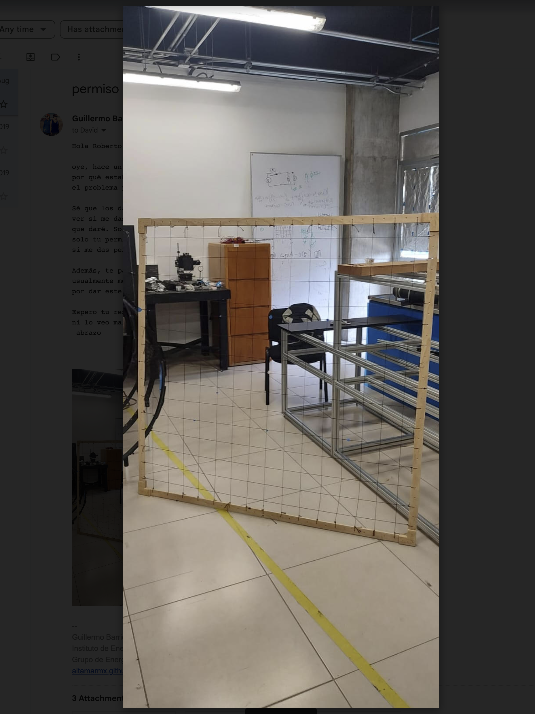
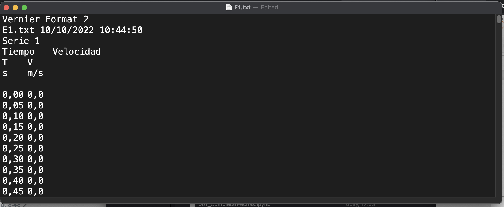
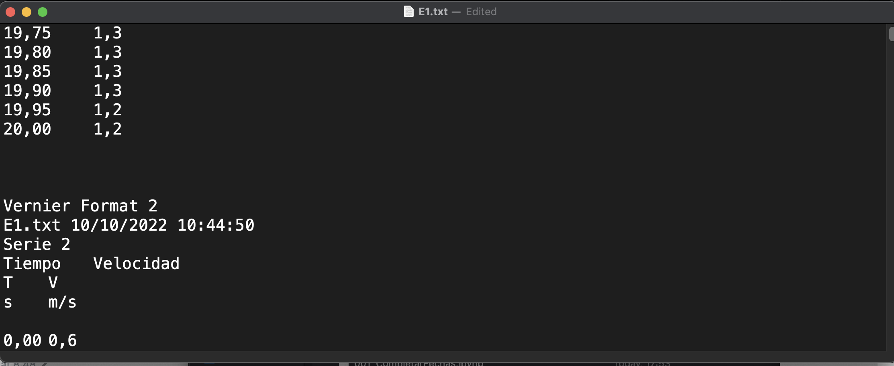
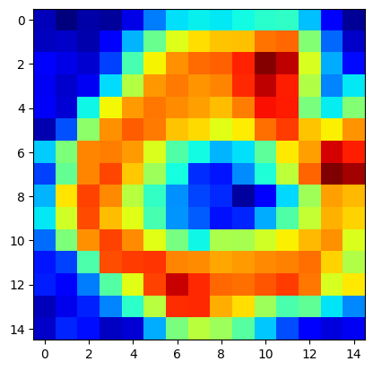
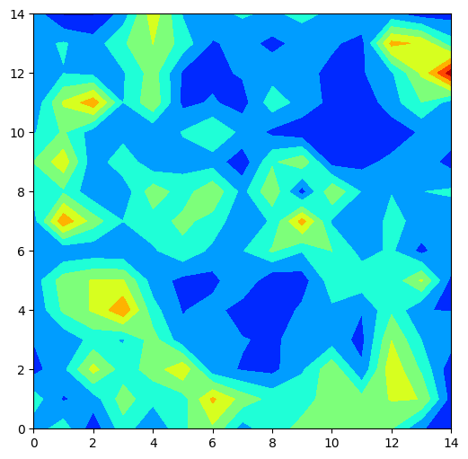
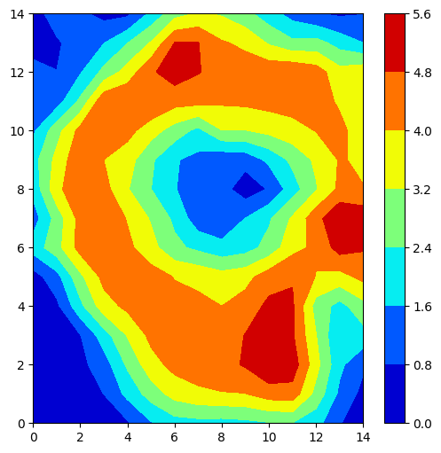

import pandas as pd
import numpy as np
from dateutil.parser import parse
import matplotlib.pyplot as plt004 Separar curvas de un excel
Datos
  
f = '../data/001_raw/005_SepararDatos/E1.txt'
nombres = ['tiempo','c2']
delta = 0.05
df = pd.read_csv(f,on_bad_lines='skip',skiprows=7,delimiter='\t',
names=nombres,usecols=[0,1])
renglones = []
for idx,row in df.iterrows():
try:
a = row[0].replace(',','.')
float(a)
renglones.append(idx)
except:
pass
df = df.iloc[renglones]
df.tiempo = df.tiempo.str.replace(',','.').astype(float)
df.c2 = df.c2.str.replace(',','.').astype(float)
df.to_csv('../data/001a_intermediate/df.csv',header=None,index=False)m = np.genfromtxt('../data/001a_intermediate/df.csv',delimiter=',',)
ceros = np.where(m[:,0] == 0.)[0]
arreglos = np.split(m,ceros)
tirar = [0,1,2,191]
matriz = [np.mean(arreglo[:,1]) for arreglo in arreglos]
matriz = np.array([i for j, i in enumerate(matriz) if j not in tirar]).reshape(15,15)
fig, ax = plt.subplots()
ax.imshow(matriz,cmap='jet')/Users/gbv/virtualenvs/alldays/alldays/lib/python3.10/site-packages/numpy/core/fromnumeric.py:3464: RuntimeWarning: Mean of empty slice.
return _methods._mean(a, axis=axis, dtype=dtype,
/Users/gbv/virtualenvs/alldays/alldays/lib/python3.10/site-packages/numpy/core/_methods.py:192: RuntimeWarning: invalid value encountered in scalar divide
ret = ret.dtype.type(ret / rcount)<matplotlib.image.AxesImage at 0x110505240>
cerosarray([ 0, 401, 480, 881, 1282, 1683, 2084, 2485, 2886,
3287, 3688, 4089, 4454, 4855, 5256, 5657, 6058, 6459,
6860, 7261, 7662, 8063, 8464, 8865, 9250, 9651, 10052,
10453, 10854, 11255, 11656, 12057, 12458, 12859, 13260, 13661,
14062, 14463, 14864, 15265, 15666, 16067, 16468, 16869, 17270,
17671, 18072, 18329, 18730, 19131, 19532, 19933, 20334, 20735,
21136, 21537, 21938, 22339, 22740, 23141, 23542, 23943, 24330,
24731, 25132, 25533, 25934, 26335, 26736, 27137, 27538, 27939,
28340, 28741, 29142, 29543, 29944, 30345, 30746, 31147, 31548,
31949, 32350, 32751, 33152, 33553, 33954, 34355, 34756, 35157,
35558, 35959, 36360, 36761, 37162, 37563, 37964, 38365, 38766,
39167, 39568, 39969, 40370, 40771, 41172, 41573, 41974, 42375,
42776, 43177, 43578, 43979, 44380, 44781, 45182, 45583, 45984,
46385, 46786, 47187, 47588, 47989, 48390, 48791, 49192, 49593,
49994, 50395, 50796, 51197, 51598, 51999, 52400, 52801, 53202,
53603, 54004, 54405, 54806, 55207, 55608, 56009, 56410, 56811,
57212, 57613, 58014, 58415, 58816, 59217, 59618, 60019, 60420,
60821, 61222, 61623, 62024, 62425, 62826, 63227, 63628, 64029,
64430, 64831, 65232, 65633, 66034, 66435, 66836, 67237, 67638,
68039, 68440, 68841, 69242, 69643, 70044, 70445, 70846, 71247,
71648, 72049, 72450, 72851, 73252, 73653, 74054, 74455, 74856,
75257, 75658, 75709, 76110, 76511, 76912, 77313, 77714, 78115,
78516, 78917, 79318, 79719, 80120, 80521, 80922, 81323, 81724,
82125, 82526, 82927, 83328, 83729, 84130, 84531, 84932, 85333,
85734, 86135, 86536, 86937, 87338, 87739, 88140, 88541, 88942,
89343, 89744, 90145])fig, ax = plt.subplots()
ax.imshow(matriz,cmap='jet')<matplotlib.image.AxesImage at 0x128f87430>
m = np.genfromtxt('../data/001a_intermediate/df.csv',delimiter=',',)
ceros = np.where(m[:,0] == 0.)[0]
arreglos = np.split(m,ceros)
tirar = [0,1,2,191]
matriz = [np.std(arreglo[:,1]) for arreglo in arreglos]
matriz = np.array([i for j, i in enumerate(matriz) if j not in tirar]).reshape(15,15)
fig, ax = plt.subplots(figsize=(6,6))
ax.contourf(matriz,cmap='jet')/Users/gbv/virtualenvs/alldays/alldays/lib/python3.10/site-packages/numpy/core/_methods.py:269: RuntimeWarning: Degrees of freedom <= 0 for slice
ret = _var(a, axis=axis, dtype=dtype, out=out, ddof=ddof,
/Users/gbv/virtualenvs/alldays/alldays/lib/python3.10/site-packages/numpy/core/_methods.py:226: RuntimeWarning: invalid value encountered in divide
arrmean = um.true_divide(arrmean, div, out=arrmean,
/Users/gbv/virtualenvs/alldays/alldays/lib/python3.10/site-packages/numpy/core/_methods.py:261: RuntimeWarning: invalid value encountered in scalar divide
ret = ret.dtype.type(ret / rcount)<matplotlib.contour.QuadContourSet at 0x110557eb0>
m = np.genfromtxt('../data/001a_intermediate/df.csv',delimiter=',',)
ceros = np.where(m[:,0] == 0.)[0]
arreglos = np.split(m,ceros)
tirar = [0,1,2,191]
matriz = [np.mean(arreglo[:,1]) for arreglo in arreglos]
matriz = np.array([i for j, i in enumerate(matriz) if j not in tirar]).reshape(15,15)
fig, ax = plt.subplots(figsize=(6,6))
im = ax.contourf(matriz,cmap='jet')
fig.colorbar(im)<matplotlib.colorbar.Colorbar at 0x128c273a0>